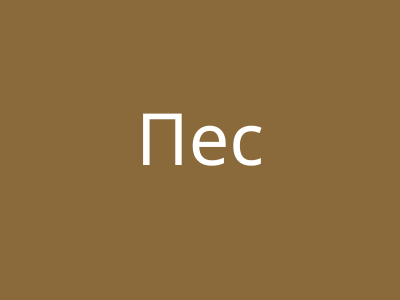

Каталог порід
На цьому етапі сторінка деталей існує лише для породи «Лабрадор-ретривер».
Породи

- Категорія: Собаки
- Розмірна група: велика
- Середня вага: 29.0 кг
- Для квартири: так
Німецька вівчарка
- Категорія: Собаки
- Розмірна група: велика
- Середня вага: 32.0 кг
- Для квартири: ні
Чихуахуа
- Категорія: Собаки
- Розмірна група: мала
- Середня вага: 2.5 кг
- Для квартири: так
Джек-рассел-тер’єр
- Категорія: Собаки
- Розмірна група: мала
- Середня вага: 6.5 кг
- Для квартири: так
Мейн-кун
- Категорія: Коти
- Розмірна група: велика
- Середня вага: 7.5 кг
- Для квартири: так
Британська короткошерста
- Категорія: Коти
- Розмірна група: середня
- Середня вага: 5.5 кг
- Для квартири: так
Бенгальська кішка
- Категорія: Коти
- Розмірна група: середня
- Середня вага: 5.0 кг
- Для квартири: так
Фландрський гігант
- Категорія: Кролики
- Розмірна група: велика
- Середня вага: 6.0 кг
- Для квартири: ні